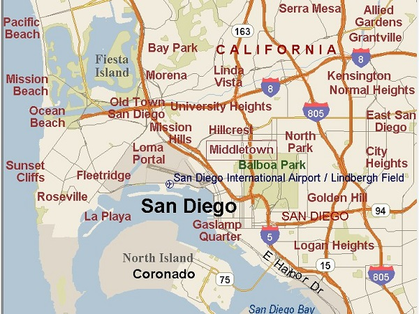

Location
Questions?Contact us today!
bountifulfoods@gmail.com
(760)374-8925
Who Are We?
Bountiful Foods was started by a couple, Brad and Annie, that was looking for
healthier options to help feed their growing family. They wanted to provide more
variety in their diet while still giving their bodies the nutrition that
it needed, all while not breaking the bank. They started doing research
and after hundreds of hours of work, Bountiful Foods emerged. Brad and Annie
are excited to help others overcome some of the same struggles they had.
They firmly believe that it is possible to be healthy, enjoy the food you eat,
and stay within your budget. They offer speciality drinks, the option to create
your own drink, and sell fresh produce for the enjoyment of the community.